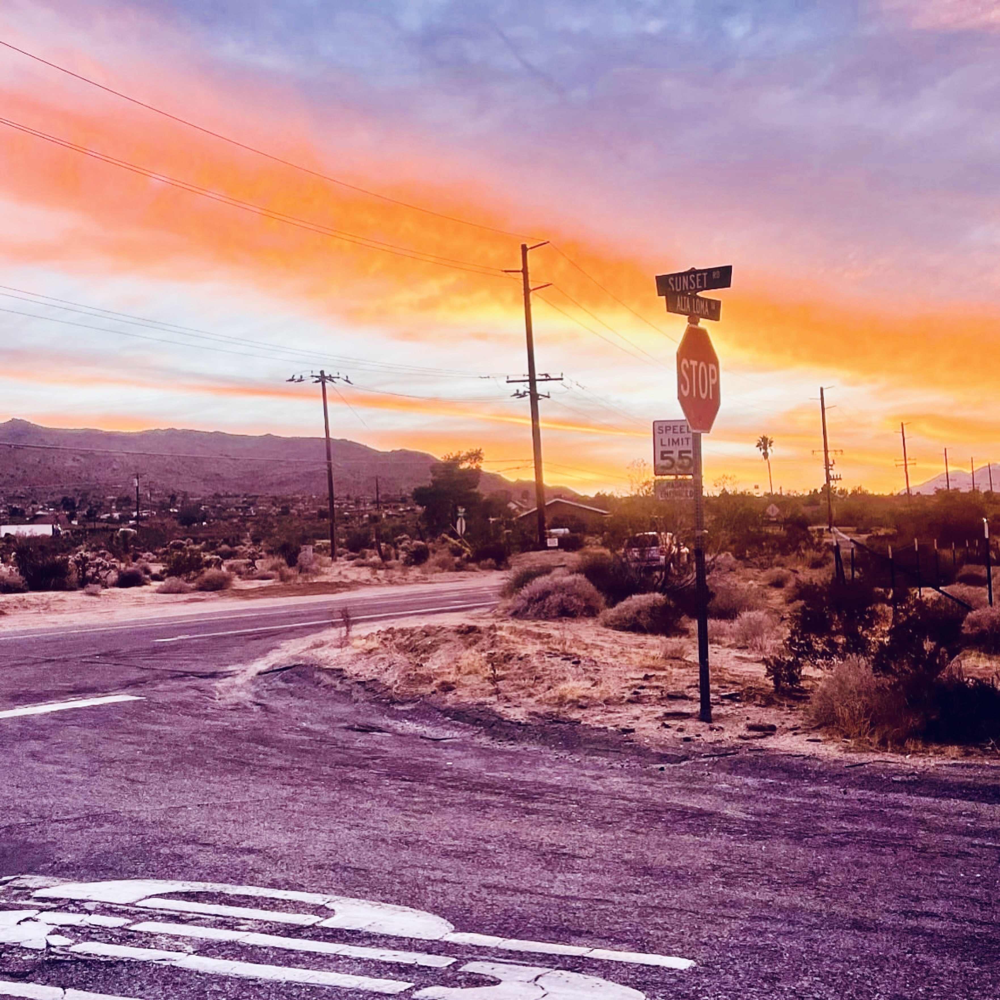

What is The Desert Door Rest + Resilience Residency?
The Desert Door is a Rest + Resilience artist residency located in Joshua Tree Village, California. Founded by artist Katherine Helen Fisher in 2019, the program offers interdisciplinary artists dedicated time and space to step away from daily demands and reconnect with their creative practice.
Rather than focusing on production or deliverables, The Desert Door prioritizes reflection, experimentation, rest, and conversation. Artists are invited to use the residency to germinate ideas, rehearse, write, think, collaborate, and spend time together in a quiet desert environment.
The residency includes a four-bedroom home, a dedicated movement studio with a sprung floor, and outdoor space for rest, gathering, and reflection.
Who is this residency for?
The Desert Door welcomes interdisciplinary artists across disciplines, including but not limited to:
Because the property includes a movement studio with a sprung floor, preference is given to artists or teams who engage with dance, choreography, somatic practice, or other embodied work.
The residency is especially well suited for small teams or collaborators who want time to think, devise, cook, talk, practice and spend meaningful time together.
Is there an expectation to produce work during the residency?
No.
The Desert Door is not a production residency. There are no required outcomes, presentations, or deliverables. Artists are encouraged to use the time in whatever way best supports their practice, whether that means developing ideas, rehearsing, researching, resting, or simply reconnecting with creative momentum.
How long are the residencies?
Residencies are offered in three fixed durations:
Residencies must fit within one of these timeframes. Custom durations are not available.
All residencies begin on Sundays, with check-in at 4pm, and end on Sundays, with check-out at 11am.
Is there a stipend?
Yes. Each residency includes a modest stipend intended to help offset expenses:
Is the residency funded or sponsored?
The residency is currently made possible through private philanthropy, with administrative and curatorial support from Katherine Helen Fisher, Shimmy Boyle, and Caroline Haydon.
What does the residency include?
Residents receive access to:
The residency is designed to support both creative work and rest.
How many artists can participate in a residency?
The residency can comfortably accommodate small teams or collaborative groups staying together in the house. The exact number will depend on the size and needs of the group, but the home includes four bedrooms.
The maximum number of overnight guests on the property is 8 people.
One artist must apply as the primary resident.
Do all collaborators need to stay for the entire residency?
Collaborators are welcome to join during the residency period. However, the primary resident, or main applicant, must remain on site for the full duration of the residency. Residents may not sublet, transfer, resell, or otherwise charge others for use of the space, and no public events or classes may be held on site. Violation of these policies will result in immediate termination of the residency.
Where is The Desert Door located?
The residency is located in Joshua Tree Village, California, in a quiet neighborhood about:
Approximate travel distances:
Joshua Tree is known for its desert landscape, star-filled skies, and robust community of artists and musicians.
Is transportation required?
Yes. Joshua Tree is a rural desert town, and having a car is strongly recommended for accessing grocery stores, restaurants, and the national park.
Are pets allowed?
Dogs are welcome with an additional pet fee. Unfortunately, cats cannot be accommodated. More details can be found in the House Rules & Policies below.
Are meals provided?
Meals are not provided, but the residency includes a fully equipped kitchen designed for shared cooking and gathering. Joshua Tree Village also has a number of nearby cafes, restaurants, and markets.
Is cleaning provided?
For longer residencies:
One-week residencies do not include mid-stay cleaning.
Is the studio suitable for amplified sound or music rehearsal?
Yes. Live or amplified music can be used, but noise monitors are installed on the property and residents must remain in strict compliance with San Bernardino County short-term rental sound regulations.
Quiet hours are from 10pm to 7am. Any fines resulting from noise violations will be passed along to the artist in residence.
Is the property accessible?
Yes. We welcome conversations about accessibility needs in advance of the residency.
Because The Desert Door is a private home rather than a purpose-built institutional facility, accessibility will depend on the specific needs of the resident and which spaces they plan to use. We encourage applicants to reach out before applying so we can discuss the layout of the house, studio, casita, and outdoor areas and help determine whether the property will be a good fit.
What are the house rules?
Residents are expected to respect the space and the surrounding neighborhood. Quiet hours are from 10pm to 7am.
Please review the full House Rules & Policies below.
Key rules include:
Which artists have previously participated in the residency?
A list of past residents and collaborators includes:
When are residencies offered?
Available dates and application windows are listed on the application page.
How do I apply?
Applications are submitted through our online application form.
Applicants will be asked to provide:
Can I visit Joshua Tree National Park during the residency?
Yes. The park is about 6 minutes from the house, and many residents incorporate hiking, time outdoors, and desert exploration into their stay.
Is the residency open internationally?
Yes. Artists from outside the United States are welcome to apply, though travel and visa arrangements are the responsibility of the resident.
Residents are expected to respect the space, the surrounding neighborhood, and all local short-term rental regulations. By accepting a residency at The Desert Door, residents agree to the following:
Guest Maximum
We have an eight-guest maximum in accordance with the laws of San Bernardino County for a short-term rental of this size. We cannot accommodate more than 8 overnight guests at the property under any circumstances.
Responsibility for the Property
Damage to the house or its contents may be charged to the artist-in-residence at the host's discretion.
Use of the Residency
The residency is intended only for the approved resident group during the approved residency period.
Residents may not sublet, transfer, resell, or otherwise charge others for use of the space. Public events or classes may not be held on site. Violation of these policies may result in immediate termination of the residency.
Studio Use
The residency includes access to the sprung-floor dance studio. Please communicate with the hosts in advance if you plan to use the studio for amplified rehearsal, technical setup, or activity outside ordinary residency use.
Events and Gatherings
We cannot accommodate parties, public events, or classes. The property is intended for private residency use by the approved resident group only.
Noise Policy
Noise monitors are installed on the property. If we receive complaints from neighbors or San Bernardino County regarding noise, penalty fees may be charged at the host's discretion.
San Bernardino County imposes strict noise limits:
By accepting a residency you accept full legal responsibility for any fines we incur due to noise violations caused by you or your collaborators. Fines can be excessive and can result in the loss of the host's STR license, so it is very important that noise laws are respected.
Laundry
Laundry facilities are available on the premises — we ask artists to supply their own detergent. Alternatively, Joshua Tree Laundry is located just three minutes away on 29 Palms Highway.
Parking
A maximum of five cars is allowed on the property.
Security Cameras
External security cameras, noise monitors, and smoking detectors are installed around the exterior of the property for safety.
Septic System
Only toilet paper is allowed to be flushed. Please do not flush paper towels, tampons, wipes, or other items. A trash can is provided for these materials.
Professional Shoots
No professional film or photo shoots are allowed without prior approval. Unauthorized shoots will incur a $1,500 per day fee.
WiFi Usage
By connecting to our guest WiFi, you agree not to engage in any illegal activity online.
Guests and Pets
Please do not bring additional or unauthorized guests or pets without approval.
The pet cleaning fee is $45 per stay. Additional fees may apply for unattended pets or uncleaned pet messes at check-out.
Dogs over 45 pounds require approval from the host before booking. Cats cannot be accommodated.
Pet Safety
Please be aware of wildlife in the desert, including coyotes and hawks, which may pose a risk to your pet. Keep dogs on a leash at all times outside. If you choose to let your dog off leash, you do so at your own risk.
Dog Rules
Please pick up all dog waste. Do not leave dogs unattended in the house.
Children
Parents are encouraged to apply. We offer a high chair and a Pack 'n Play upon request. Children should not be left unattended outdoors at any time because of wild life.
Before You Depart
Please turn off all lights and electronics and lock all doors.
Clean your dishes and leave the property in the same condition as you found it to avoid additional cleaning fees.
Take the trash out to the bins next to the garage before departure.
Damages
The owner may request damages if house rules are violated. This includes, but is not limited to:
Personal Property
The owner is not responsible for loss or damage to your personal property or vehicles, nor for personal injuries during your stay.
Outdoor Clawfoot Bathtub Usage
To enjoy the hot water in the outdoor clawfoot bathtub, please run the hot water at half capacity. Running it too high may cause the water temperature to drop, so adjusting it to a moderate flow will help maintain a warm soak.
Liability
By accepting a residency, you agree to indemnify, defend, and hold the owner harmless from any claims or damages resulting from injury or loss to you, your guests, or your property.